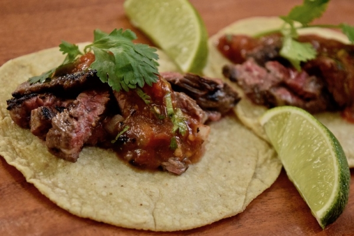

Skirt Steak Tacos

Description
Skirt steak tacos are a great way to elevate your tacos from ordinary to gourmet. Skirt steak cooks quickly and you can combine any number of salsas and sauces to highlight your new favorite dish. Combine that with your favorite kind of tortilla and you're all set to have an excellent and quick dinner.
We've had the best results cooking this dish on a stove, but a grill will work too.
Ingredients
- Skirt steak-we recommend an outside cut
- 1-2 tbsp salt
- 1 tbsp butter
- 1 White onion
- 3 medium tomatoes
- 1 jalapeno pepper
- 1 bunch cilantro
- 1 lime-cut into 6 wedges
- 1 head of cabbage
- Taco sized tortillas-corn or flour
Steps
- Cut the steak into pieces that will fit well into the pan and liberally salt both sides. Let the steak sit for at least 30 mins but no longer than 1 hour
The Salsa
- Cut the onion in half. Dice half for the salsa and place into the mixing bowl and make thick slices of the other half for frying
- Dice all the tomatoes jalapeno and place into the mixing bowl for the salsa
- Chop the cilantro and add to the salsa bowl
- Squeeze 2 lime wedges into the salsa and mix thoroughly
- Slice the cabbage as thinly as possible off the head and set aside to top the tacos with
Back to the Steak
- Heat a pan to medium-high on the stove and ad 1 tbsp butter
- Place the steak into the hot pan with the fatty side of the steak up-this helps melt the fat (i.e. the most flavorful part! into the meat). Cook for approximately 3-5 mins or until you can see that the steak is changing color a little farther than halfway up the side of the pieces
- Flip the steak over and cook for another 3-5 mins or about when you start to see blood start to come out of the top. Take the steak off and cover it for at least 5 minutes to let it finish cooking
- Cut the steak into strips or small cubes, try not to eat too much while you cut
- Heat the tortillas in whatever manner you prefer-we like to put them right over the burners, but warming them in the microwave, in a pan, by the sun are all ok too!
- Put the steak onto the tortillas, spoon some salsa on it, top with cabbage, and squeeze a lime over the whole enchilada (no pun intended!).